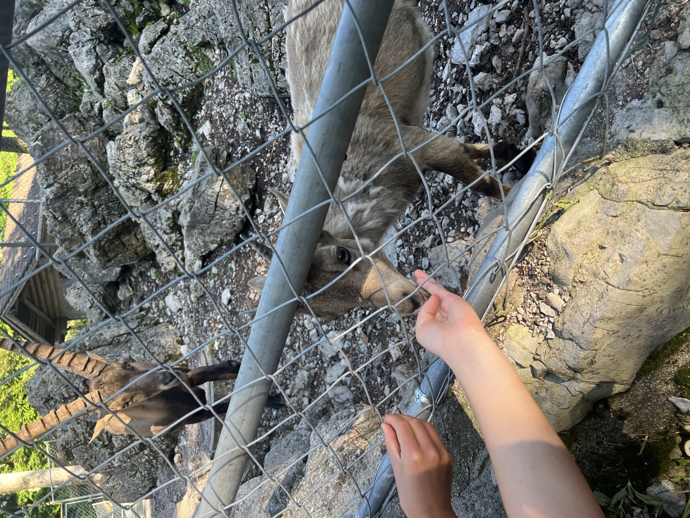
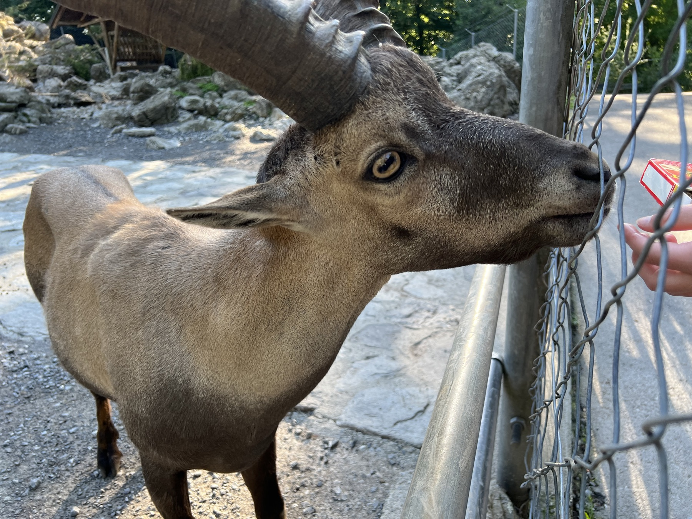
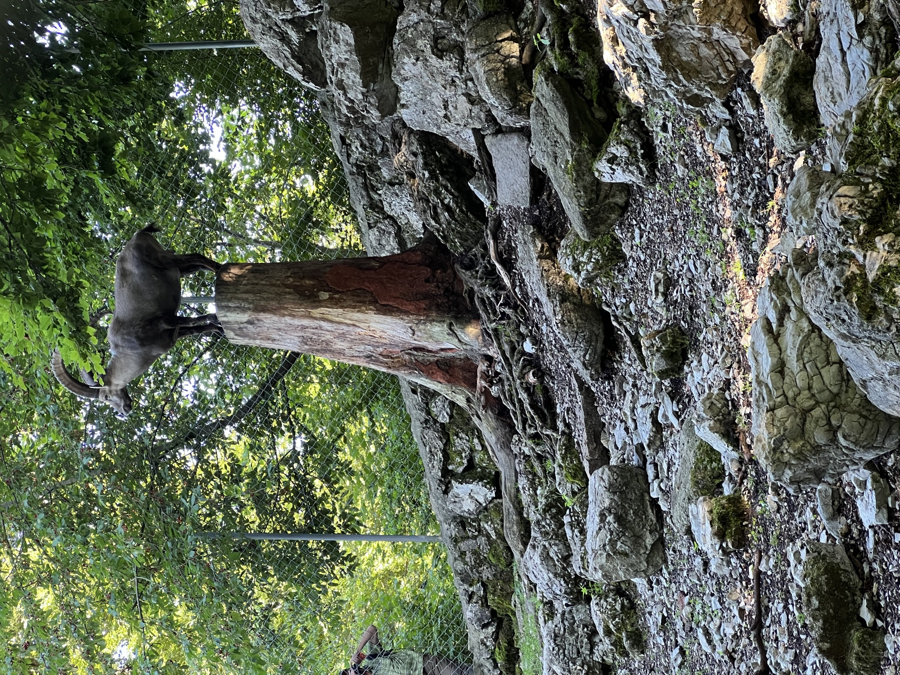
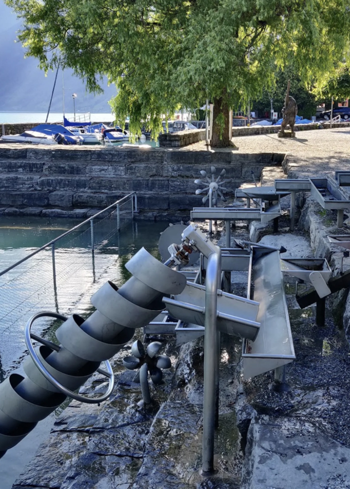
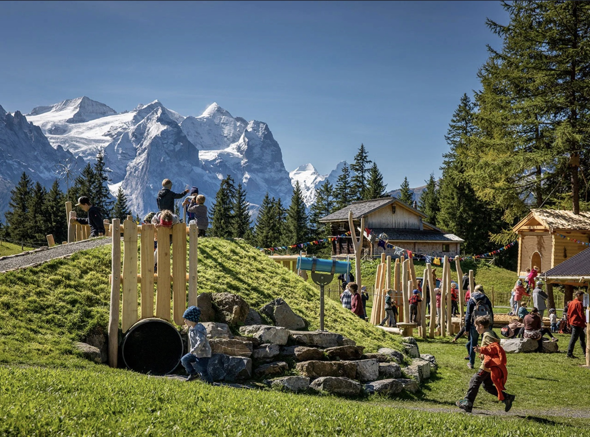
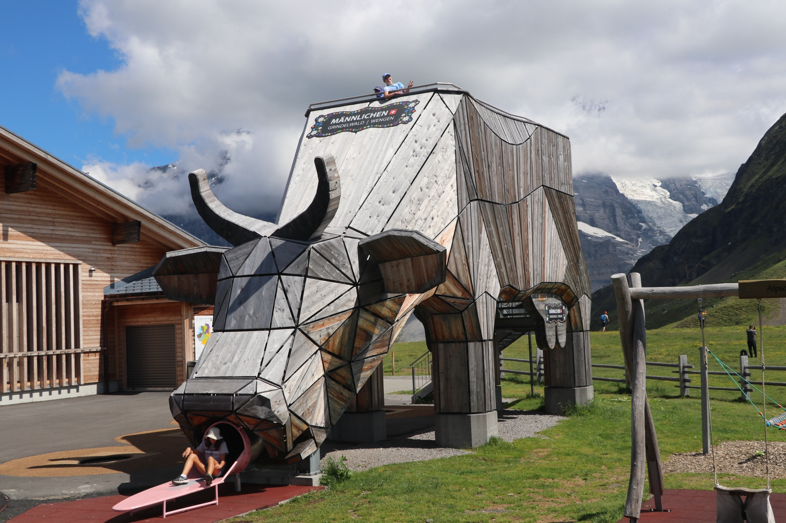
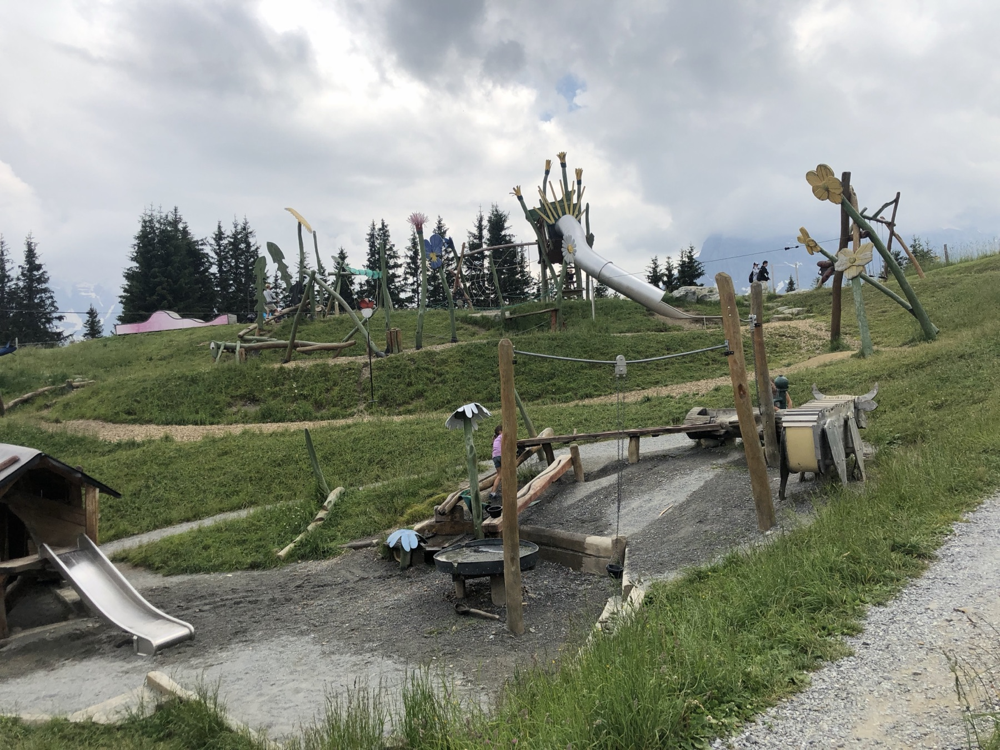

01
Free · 20-minute walk
Brienz Wildlife Park
Experience ibex, red deer, snowy owls and even marmots at close range. Children can feed the animals with special feed purchased on-site. Admission is free.



Family favorites · Five ideas
Easy local outings, imaginative mountain playgrounds and a family-friendly trail—five ways to keep younger travelers happily exploring.
01
Free · 20-minute walk
Experience ibex, red deer, snowy owls and even marmots at close range. Children can feed the animals with special feed purchased on-site. Admission is free.




02
Local · Water play
Children can play to their hearts’ content on water-themed equipment along the banks of Lake Brienz.

03
Hasliberg · Gondola access
Immerse your family in the world of the Hasliberg dwarves on the Muggestutz trail.
Take the train to Meiringen and continue by gondola to the trail, or drive to Hasliberg Reuti and take the gondola from there.

04
Männlichen · Mountain playground
Pair the panoramic Männlichen–Kleine Scheidegg hike with time at the Alpine Herdsman’s Playground.

05
Allmendhubel · Flower Park
A large mountain adventure playground makes an excellent stop before or after exploring Mürren and the surrounding trails.